7. Transposisi Rail Fence
Membuat database untuk aplikasi To Do List

Dari web To Do List kita perlu membuat database sesuai tabel di bawah ini
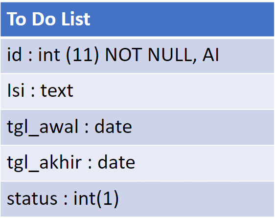
Membuat Database
Untuk membuat database dapat menggunakan fasilitas dari platform atau scripting. Pada halaman beranda phpMyAdmin terdapat menu Database dan SQL. Pada Database dapat membuat database baru dengan menggunakan platform atau GUI dari phpMyAdmin. Sedangkan pada menu SQL dapat memasukkan script CREATE untuk membuat database baru dengan menggunakan code SQL.
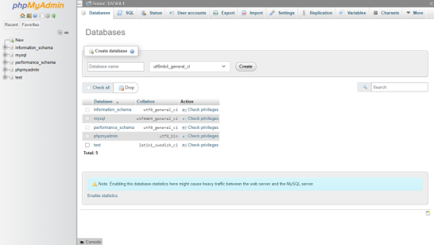

Untuk membuat database menggunakan phpMyAdmin perlu mengaktifkan terlebih dahulu apache dan mysql pada xampp agar terhubung pada phpMyAdmin. Lalu memulai aplikasi phpMyAdmin melalui http://localhost/phpmyadmin/
Create Database dari GUI PHPMyAdmin
Untuk membuat database melalui phpMyAdmin dapat melalui langkah-langkah berikut:
- Buka phpMyAdmin pada web browser
- Klik menu Databases di sisi kiri atas
- Pada halaman baru, klik tombol Create Database
- Masukan nama untuk databse yang akan di buat
- Lalu klik enter atau Create.
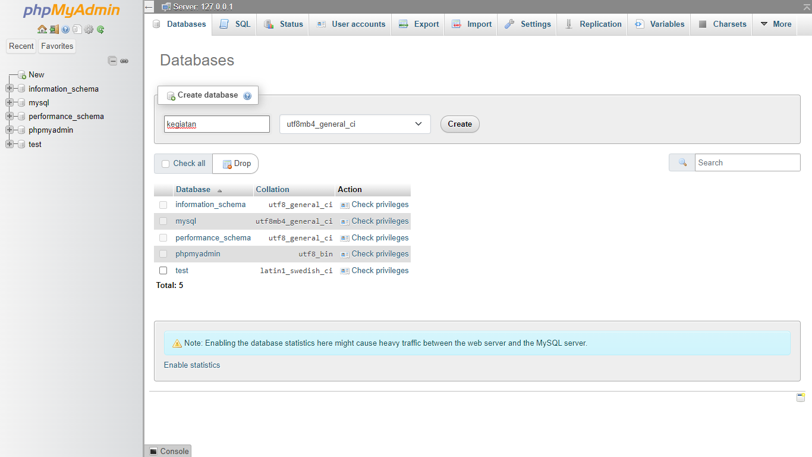
Create Table dari Platform
Setelah database dibuat langkah selanjutnya adalah membuat tabel-tabel yang akan digunakan. Berikut adalah langkah-langkah membuat tabel baru:
- Login ke platform (phpMyAdmin)
- Pilih database yang ingin dituju
- Klik tab Tables dan pilih tabel mana yang ingin anda tambahkan
- Pada form Create Table masukkan nama tabel dan jumlah kolom yang akan dibuat.
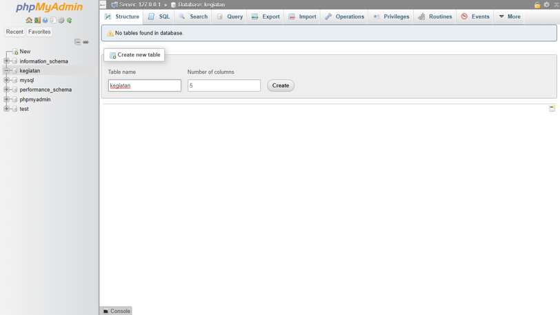
- Isi form field sesuai perintah yang telah disediakan
- Tekan save.
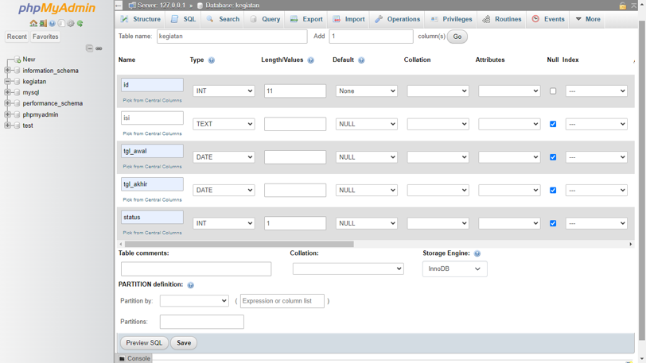
Preview Scripting SQL
Meskipun meembuat tabel melalui platform atau GUI dari phpMyAdmin tetap kita dapat melihat bagaimana kode yang berjalan pada proses pembuatan tabel tersebut dengan klik tombol preview SQL yang terdapata pada sebelah tombol save atau simpan.
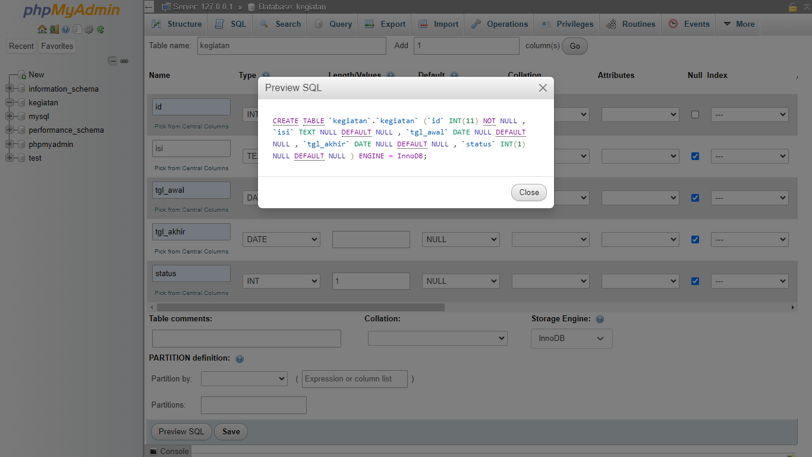
Menambahkan Primary Key
Menambahkan primary key pada suatu table adalah proses untuk menjadikan salah satu atau beberapa column dari table sebagai referensi unik, agar tidak ada dua data yang memiliki nilai yang sama pada semua row tsb. Proses ini dilakukan setelah membuat columns baru pada table. Jika pada pembuatan tabel belum diinisialisasi untuk primary key, dapat mengubah dalah satu kolom menjadi primary key melalui perintan alter. Sehingga perlu membuka menu SQL untuk memasukkan kode sql untuk merubah data menjadi primary key.
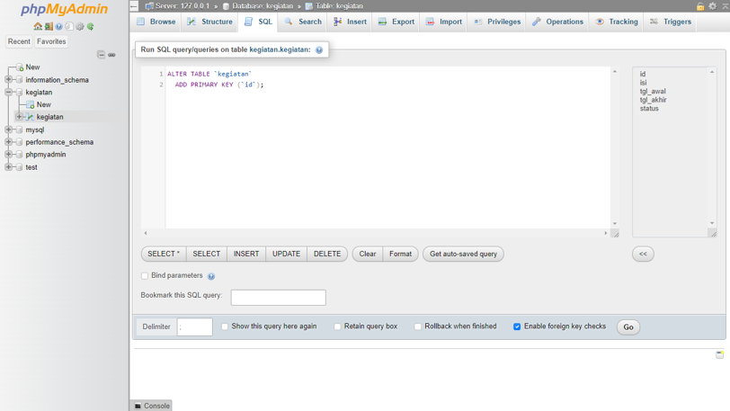
Selain itu dapat mengubah data yang bersifat primary key melalui platform phpmyadmin dengan cara membuka database lalu tabel yang akan digunakan lali pilih menu arsitektur. Melalui menu tersebut akan ditampilkan kolom-kolom dari tabel. Checklist kolom yang ingin diatur lalu klik ubah atau Change, atau langsung klik primary dengan ikon kunci untuk merubah suatu kolom menjadi primary.
Membuat Auto Increment melalui Platform
Auto increment merupakan cara untuk mengatur nilai otomatis pada kolom yang memiliki tipe data integer, yang akan diisi secara berurutan dan tidak boleh ada duplikasi. Auto Increment biasa digunakan untuk membuat primary key secara otomatis untuk setiap kali data baru dimasukan ke database, maka value yang diinput akan ditetapkan oleh sistem dan tidak dapat dirubah lagi oleh user.
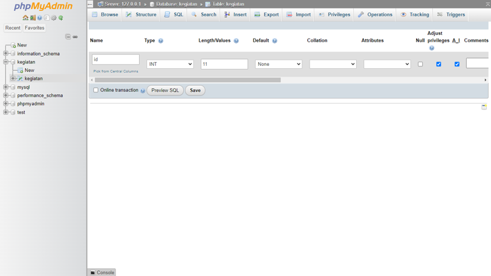
Insert Data
Setelah database dan tabel telah dibuat, langkah selanjutnya adalah melakukan input data kedalam tabel yang sesuai. Melalui phpMyAdmin dapat melakukan perintah insert untuk input data melalui platform atau perintah SQL.
Insert melalui Platform
Untuk melakukan insert data melalui platform dapat dilakukan melalui beberapa tahap berikut: langkah-langkah insert data melalui GUI phpMyadmin:
- Buka Database lalu tabel yang ingin dilakukan input data.
- Klik menu insert pada Tab Tabel.
- Isikan data-data pada form sesuai dengan tipe data yang diinginkan. Pada kolom yang bersifat auto increment tidak perlu diisi apapun karena akan digenerate oleh sistem.
- Setelah semua terisi klik Go.
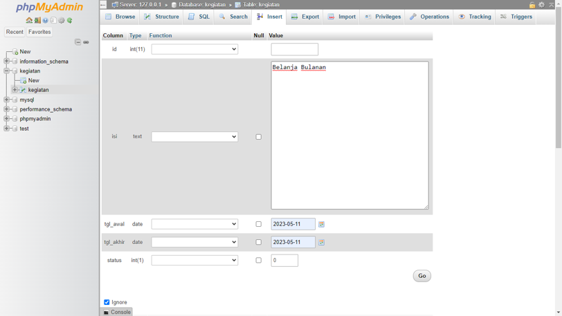
Insert Table Melalui SQL
Selain melalui platform dengan kemudahan yang diberikan, dapat juga melakukan input data dengan menggunakan kode SQL sehingga dapat melatih kemampuan dalam mengolah bahasa pemrograman untuk database SQL. Adapun langkah-langkah yang bisa dilakukan sebagai berikut:
Buka Database lalu tabel yang ingin dilakukan input data.
Klik SQL pada menu Tab Tabel.
Terdapat textbox untuk mengisikan kode SQL untuk menyimpan, mengubah bahkan menghapus data pada database sesuai dengan syntax yang ada.
Inputkan perintah untuk melakukan insert pada tabel, seperti berikut:
INSERT INTO `kegiatan` (`id`, `isi`, `tgl_awal`, `tgl_akhir`,`status`) VALUES (NULL, 'Belanja Bulanan', '2023-05-15', '2023-06-11', 0);
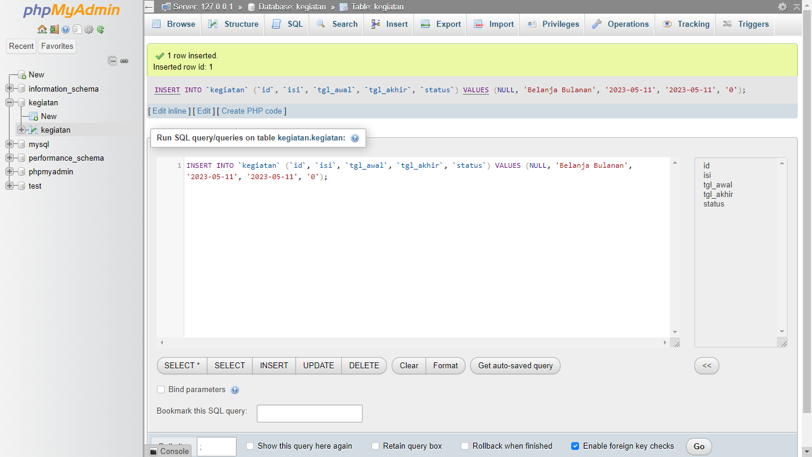
Insert Bertumpuk dalam SQL
Proses insert pada database bisa juga secara serentak atau bersamaan sekaligus melalui kode sql seperti berikut.
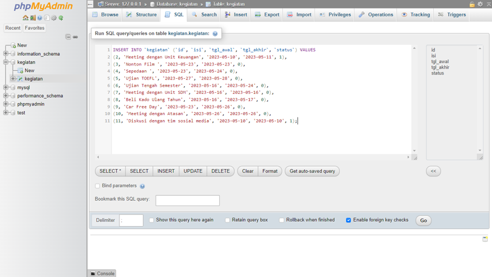
Pada insert tabel tidak perlu menginputkan id atau kolom yang bertugas sebagai primary key. Hal tersebut terjadi karena telah diatur otomatis melalui perintah auto increment, sehingga pada input ataupun update data tidak ada input atau menyimpan id karena telah di atur oleh sistem.
Preview SQL perintah yang berhasil berjalan.
Setiap selesai proses pada database baik melalui platform yang diberikan maupun kode SQL akan selalu muncul script kode SQL dari program yang baru saja berjalan, seperti berikut
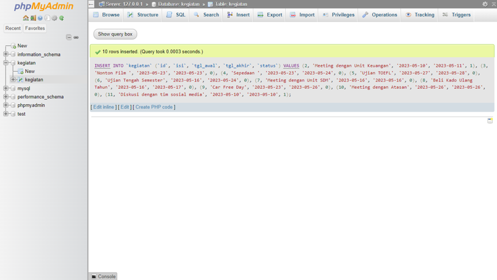
Preview Hasil Table
Berikut adalah hasil dari praktikum database untuk studi kasus To Do List:
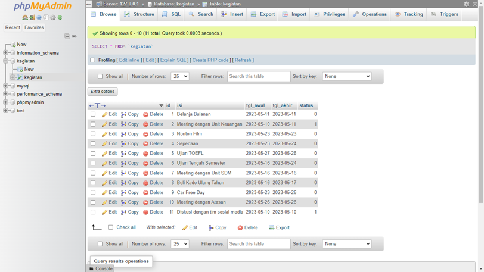